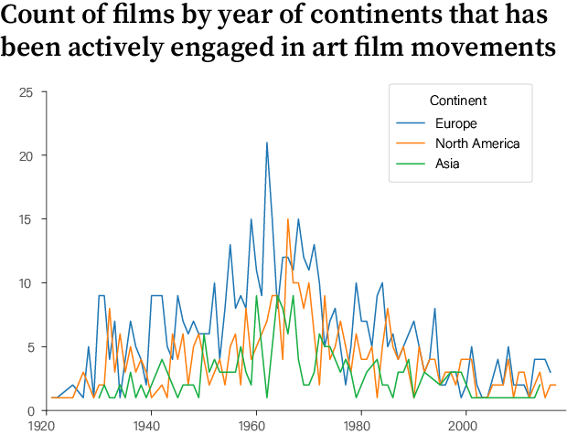

WHAT?
As a somewhat cinephile, I am a subscriber to the Criterion Collectoin streaming service, and I get to see some of the best movies ever made on it. But Criterion Collection does more cool things than that - they also focused on distributing "important classic and contemporary films". The company covered things such as film restoration, publishing collectable blue-ray/DVD edition, critics’ commentary add-ons, and so on and so forth. For this project, I want to investigate on what basis the CC team decides on which film is worth collecting, meaning that I will be looking into the data of all the films they have licensed so far and see what these films align with or diverge from one another, just so we could get a better sense of why the team selected those films and the relationship between different variables (could be country, director, length, format, and etc.).
WHERE?
First, we are going to take a look at the origin of CC's liscensed films. Which country has more films on the list? Which country has more director on the list?
The 1209 films in the current collection come from 44 different countries. Among them, films produced in the U.S. take up the majority. The U.S. also has the highest number of directors whose films are liscensed by CC.
Sources: https://www.criterion.com/shop/browse/list
The graph on the left shows the number of films grouped by country, and the one on the right shows the number of directors by country. These two graphs havev very similar pattern. United States is listed as number 1 on both charts.
But the below graph says otherwise - if group all the CC liscensed films by individual director and count the number films for each, none of the top directors are from the U.S.
But if you look at the count of CC liscensed films by director:
None of the directors from the top 10 list is from the U.S.
Sources: One source; another source
WHEN?
If you love films from the 60s, you are in luck! Criterion Collection got your back.
Criterion Collection has liscensed 270 films that were made in the 1960s, with a peak at the year of 1966, as a total of 34 films from 1966 are now avaliable on the site for the public to purchase.
This also brings us to these following questions: why the 60s? Did more films get produced during that period of time in comparison to other moments in the film history? Or it was because the films made in the 60s had higher quality than the others? Or it was simply CC's preferance on films?
Either way, the timeline somewhat reflects the climax and the decline of global art cinema.

If we break down these counts by continent, the alignment might be even more apparent.
List of importnat art film movements for reference:
Italian neorealism: 1943 to 1952
French New Wave: 1958 to late 1960s
British New Wave: 1959 to 1963
Japanese New Wave: Early 1950s to 1970s
Iranian New Wave: 1960s to 2010s
Hong Kong New Wave: 1979 to 2000s
Maybe now it is time to stop reading and start watching - let yourself drown in the ocean of art films by clicking here.